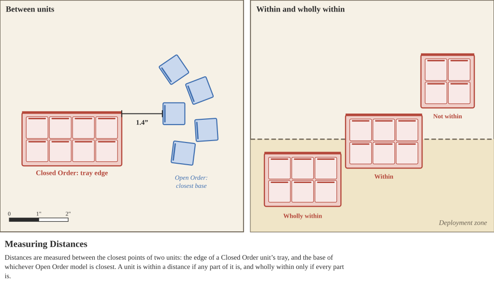

All distances in Syrrhēxis are measured in inches, and no distance may be measured before you would otherwise do so (see Golden Rules).
Unless a rule says otherwise, the distance between two units, or between a unit and anything else, is measured between their closest points:
A unit is within a distance if any part of it (its tray, or the base of any of its models) is within that distance. A unit is wholly within a distance only if every part of it is.

Effects that measure from a single model, such as a Special Character, measure from the whole unit that model belongs to.
Some rules measure differently, and those rules take priority. Movement is measured from the front of a Closed Order unit's tray, or model by model for Open Order units (see Movement). Shooting range is measured between models, ignoring trays (see Measuring under Shooting).